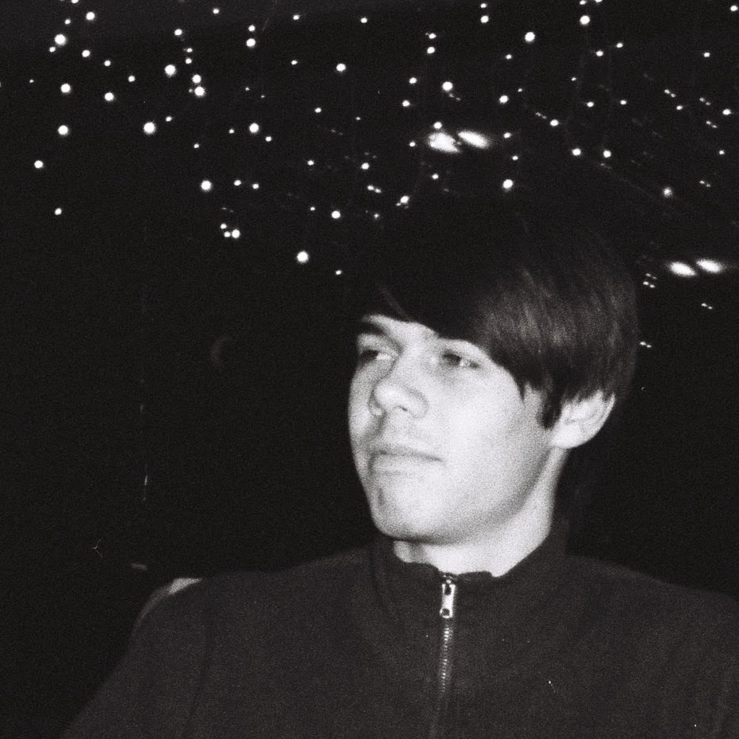

Filip Šotola
Creating realistic scenes using my experience and whatever means necessary.
About Me

CGI and environment art my core passions. I enjoy the blend of artistic and technical challenge that comes with each project. With a degree in VFX from Tomáš Baťa University and a portfolio of personal and commercial work, I can offer my skills to projects that need creative vision and technical precision. I am also proficient at compositing CG renders, as that goes hand in hand with lighting & color grading. To support this, I have also spent time understanding the vast subject of color management.
Skills
Environment art
Designing, modeling, and texturing detailed 3D assets and large-scale realistic environments.
CG generalist
Proficient in Blender, Houdini, Substance Painter, Nuke, After Effects & Fusion. Worked with Gaea, Unreal Engine & Unity.
VFX supervision
Experience with preproduction, on-set supervising and postproduction of small projects.
Color management
Developing and implementing a usable pipeline utilizing OCIO / ACES for consistent image across software.
Color Pipeline Guide
Explore my technical guide on setting up a color-managed pipeline for VFX work, focusing on RAW video formats, ACES 1.3, and interoperability between DaVinci Resolve, Blender, and Nuke.
Contact
Feel free to reach out for collaborations, freelance work, or technical inquiries.